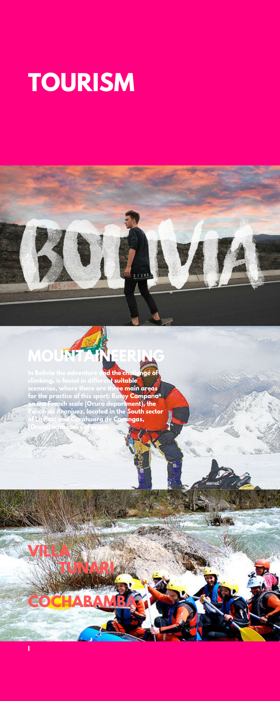

4.Tourism
.png)
Tourism as such, born in the nineteenth century , as a consequence of the Industrial Revolution , with displacements whose main intention is leisure, relaxation, culture, health, business or family relations. These movements are differentiated by their purpose of other types of travel motivated by wars, migratory movements, conquest, trade, among others. However tourism has clear historical background.
Ancient Age
In classical Greece great importance was given to leisure, and leisure time was devoted to culture, entertainment, religion and sport. The most outstanding trips were those made to attend the Ancient Olympic Games in the city of Olympia , which thousands of people attended and where they mixed religion and sport. There were also religious pilgrimages, such as those that went to the oracles of Delphi and Dódona . During the Roman Empire the Romans frequented thermal waters (Baths of Caracalla), were regulars of great spectacles, like the theaters, and realized habitual displacements towards the coast (very well-known is the case of a villa of vacations on the seashore). These trips of pleasure were possible due to three fundamental factors: the Roman Peace, the development of important roads of communication and the economic prosperity that allowed some citizens economic means and free time.Middle Ages
During the Middle Ages there is at first a setback due to the greater conflict and consequent economic recession. During this time, a new type of journey arises, the religious pilgrimages. These had already existed in ancient and classical times but both Christianity and Islam would spread them to a greater number of believers and displacements would be greater. The expeditions from Venice to the Holy Land and pilgrimages on the Camino de Santiago (from 814 when the tomb of the saint was discovered) are famous ; Continuous pilgrimages from all over Europe, creating maps, mesons and all kinds of services for walkers. In the Islamic world the Hajj or pilgrimage to Mecca is one of the five Pillars of Islam forcing all believers to this pilgrimage at least once in their lives.
Questions
- 1. ¿what does WTO mean?
World Tourism Organization
- 2.according to the definicion in which century was born as such tourism?
19th century
- 3.which is the highest lake in the world?
Titicaca lake
.png)

Vocabulary
- Lane / platform – vía o andén
- Cancelled flight – vuelo cancelado
- Luggage / Baggage – equipaje
- To book – reservar